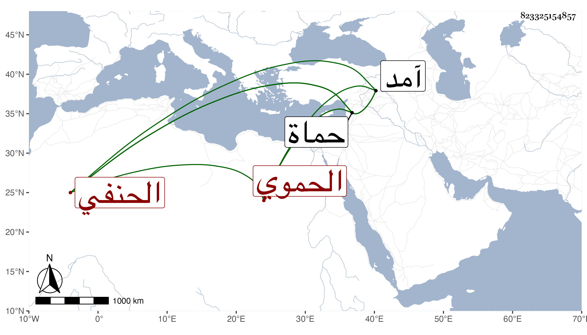

0902Sakhawi.DawLamic.ITO20230111-ara1.EIS1600.823325154857
Biography ID: 823325154857
290
محمد بن أحمد ناصر الدين الحموي الحنفي ويعرف بابن المعشوق . ولد في سنة ثمان وستين وسبعمائة بحماة ونشأ بها فحفظ القرآن وقرأ على قاضيها العلاء ابن القضامي مجمع البحرين وألفية ابن ملك وحضر مجلس الشمس الهيتي وكان يقرأ الصحيحين قراءة حسنة ويديم التلاوة مع التكسب بالتجارة بل كان في أول أمره خيميا ثم ترك أثنى عليه بلديه صاحبنا الجمال بن السابق فقال : كان خيرا دينا لا أعلم فيه عيبا تلقنت منه قطعة كبيرة من المجمع . ومات بحماة في رجب سنة إحدى وخمسين . وقد لقي شيخنا بحماة في سنة آمد شمس الدين محمد بن محمد بن أحمد بن المعشوق وقرأ عليه في البخاري وكأنه ابن لهذا ويحتمل أن يكون هو ووقع التغيير في لقبه مع إسقاط اسم أبيه ولكن الأول أشبه .
